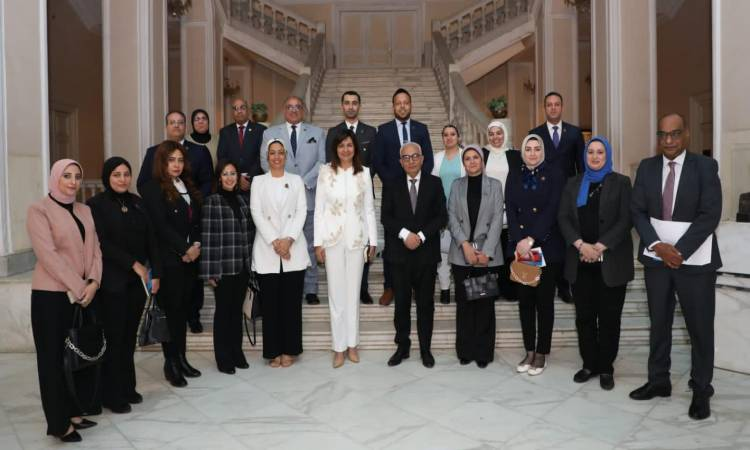

وزير التعليم يبحث الدعم النفسى للأطفال فى المدارس
التقى وفد من تنسيقية شباب الأحزاب والسياسيين، الدكتور رضا حجازى وزير التربية والتعليم، بمقر الوزارة، بحضور السفيرة نبيلة مكرم، وزيرة الدولة للهجرة وشئون المصريين بالخارج السابقة، ومؤسس ورئيس مجلس أمناء مؤسسة فاهم للدعم النفسى؛ لمناقشة سبل التعاون لتقديم الدعم النفسى للأطفال فى المدارس.
وناقش اللقاء، آليات مواجهة التنمر والعنف فى المدارس، من خلال علم النفس الإيجابى، وزيادة الوعى الوطنى لدى الأطفال، علاوة على الاهتمام بالأطفال الذين لديهم صعوبات تعلم، وتعديل مناهج التربية الفكرية، والطلاب المكفوفين، ومحاولة أن يكون هناك إحياء للنادى الصيفى بالمدارس والمسرح المدرسى وإخراج مواهب منها والعمل على استغلال الملاعب الموجودة فى المدارس.
وأعربت النائبة رشا كليب، عضو مجلس النواب عن تنسيقية شباب الأحزاب والسياسيين، عن سعادتها بالجهود المبذولة من قبل وزارة التربية والتعليم، فى تعديل المناهج، وتغيير منظومة التعليم بما يساهم فى بناء جيل جديد واعى، مشيرة إلى مبادرات التنسيقية التى تعمل على استهداف النشء وتوعيتهم وحل المشكلات المجتمعية، مثل مبادرة "البناء المتعدد"، والتى تتضمن عدة محاور بجانب التماسك الأسرى، أبرزها رعاية النشء، والصحة النفسية.
وقالت إن المبادرات تعمل على حل الكثير من المشكلات المجتمعية، وتعمل على التركيز على المجتمعات الريفية التى بحاجة إلى تلك المساهمات المجتمعية أكثر من الحضر.
وعرضت السفيرة نبيلة مكرم، رؤية مؤسسة فاهم لتقديم الدعم النفسى للأطفال وللأسر الذين لديهم أبناء يعانون من اضطراب نفسى، على أن يتم العمل على عدة شرائح للطلاب، فى المدراس فى المرحلة الإبتدائية والإعدادية والثانوية، فى محاولة لكسر وصمة العار من المرض النفسى.
واقترحت، استغلال الأخصائى النفسى، فى 1300 مدرسة تجريبية على مستوى الجمهورية للكشف عن أى مرض أو تعب نفسى خاصة وأنه من الممكن أن يبدأ للطفل منذ صغره فى حال تعرضه للتنمر.
كما اقترحت التعاون مع مؤسسة التعليم أولا، وsafe egypt، من خلال مجموعة من الكتب التى يمكن أن تعمم على الأطفال تكشف عما بداخلهم نفسيا، كما أن تلك المؤسسات لديها محتوى تدريبى للأخصائيين النفسيين، من خلال حقيبة تدريبية، وإدخال مادة الصحة النفسية فى المناهج.
من ناحيته، رحب الدكتور رضا حجازى، وزير التربية والتعليم، بوفد التنسيقية، والسفيرة نبيلة مكرم، مبديا استعداده للتعاون المثمر من أجل الصحة النفسية للطلاب فى المدارس وكل ما يصب فى مصلحة الطلاب.
وقال إن المدارس هى المكان الحقيقى للتعليم والتعلم، والتركيز على قدرات الطلاب، من خلال إدخال العديد من الأنشطة مثل اليوم الرياضى وتفعيل المسرح المدرسى وإخراج المواهب الناشئة عند الأطفال، علاوة على إشراك أولياء الأمور بما يتم مع الأطفال فى العملية التعليمية من خلال مجلس الآباء، مؤكدا أن العملية التعليمية وزرع القيم يتم من خلال المدرسة وولى الأمر ودور العبادة.